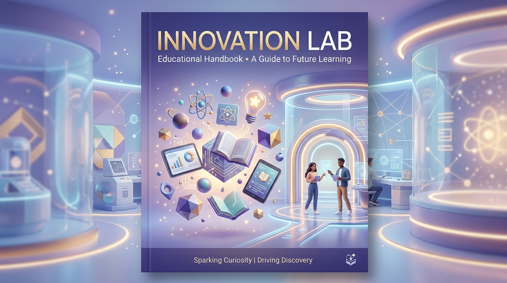
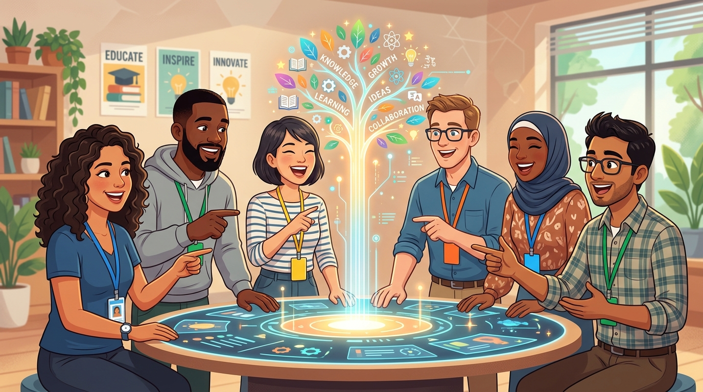

📖 คู่มือการใช้งาน Discord
🧪 Innovation Lab: ศน. โคราช
ยินดีต้อนรับท่านศึกษานิเทศก์ (ศน.) และกัลยาณมิตรทางวิชาการทุกท่านเข้าสู่ Innovation Lab: ศน. โคราช พื้นที่แห่งการเรียนรู้ แบ่งปัน และสร้างสรรค์นวัตกรรมการศึกษาของพวกเราค่ะ!
🌟 คณะผู้ดูแลชุมชน (Community Administrators)
👩🏫 ศน.ศิราณี กันชัย
ศึกษานิเทศก์ชำนาญการพิเศษ
👨🏫 ศน.แสนยากร สายสิน
ศึกษานิเทศก์ชำนาญการพิเศษ
สำนักงานศึกษาธิการจังหวัดนครราชสีมา
📂 1. แผนผังห้องต่างๆ (Channel Architecture)
เซิร์ฟเวอร์ของเราถูกออกแบบมาเพื่อลดความซ้ำซ้อนและเน้นการใช้งานจริงค่ะ:
📌 หมวด Information (จุดประชาสัมพันธ์และคลังความรู้)
- #👋-ต้อนรับและกติกา: จุดเริ่มต้นสำหรับสมาชิกใหม่ (ท่านกำลังอ่านอยู่ที่นี่ค่ะ)
- #📢-ประกาศ-แจ้งข่าว: อัปเดตข่าวสารสำคัญ นโยบาย หรือประกาศจากส่วนกลางค่ะ
- #📚-คลังสื่อและนวัตกรรม: (รูปแบบฟอรั่ม) พื้นที่รวบรวมสื่อ แผนการสอน นวัตกรรม (มีระบบ Tag ค้นหาง่ายค่ะ)
- #🏆-โชว์ผลงาน: (รูปแบบแกลเลอรี) พื้นที่อวดโฉมผลงานที่ภาคภูมิใจ หรือความสำเร็จจากการลงพื้นที่นิเทศค่ะ
💬 หมวด Text Channels (ลานเสวนา)
- #☕-สภากาแฟ-คุยทั่วไป: ห้องนั่งเล่นสำหรับพูดคุยเรื่องทั่วไป แลกเปลี่ยนความคิดเห็นแบบสบายๆ ค่ะ
- #📅-นัดหมาย-ปรึกษางาน: พื้นที่สำหรับคุยเรื่องงานโดยเฉพาะ นัดลงพื้นที่ หรือหารือข้อราชการค่ะ
- #🎉-ห้องพักใจ-เล่าเรื่อง: พื้นที่ผ่อนคลาย คลายเครียดจากการทำงานค่ะ
- #ai-เพื่อนคู่คิด-ศึกษานิเทศก์: ห้องทำงานของ "ปราชญ์โคราช AI" ค่ะ
🎙️ หมวด Voice Channels (ห้องสนทนาเสียง)
- 🔊 ชวนกันเล่นเกม: ห้องสันทนาการหลังเลิกงานค่ะ
- 🔊 มุมกาแฟ (คุยเล่น): ห้องจิบกาแฟเปิดไมค์คุยแบบไม่เป็นทางการค่ะ
- 🔊 ห้องประชุม 1: สำหรับการประชุมงาน หรือแชร์หน้าจอพรีเซนต์งานค่ะ
🤖 2. ระบบผู้ช่วย AI แบบ Tag-Team
ชุมชนของเรามี "ผู้ช่วย 2 รูปแบบ" ที่ทำงานร่วมกัน เพื่อยกระดับการทำงานวิชาการของท่านค่ะ:
💬 ผู้ช่วยคนที่ 1: "ปราชญ์โคราช AI"
(สถิตอยู่ในห้อง #ai-เพื่อนคู่คิด-ศึกษานิเทศก์ ค่ะ)
จุดเด่น: คิดไว ไอเดียพุ่ง เหมาะสำหรับ Brainstorm, ร่างโครงการ, หรือขอไอเดีย Active Learning ค่ะ
วิธีใช้: พิมพ์ @Korat Edu-Bot แล้วตามด้วยคำถาม หรือกดปุ่มเมนูลัดได้เลยค่ะ
(ตัวอย่าง: @Korat Edu-Bot ช่วยออกแบบกิจกรรม Active Learning วิชาวิทยาศาสตร์ ป.4 ให้หน่อยค่ะ)
📚 ผู้ช่วยคนที่ 2: "ฐานข้อมูล NotebookLM"
(ลิงก์ปักหมุดอยู่ในห้อง #📚-คลังสื่อและนวัตกรรม ค่ะ)
จุดเด่น: แม่นยำ 100% ตอบจากอ้างอิงระเบียบราชการ เหมาะสำหรับค้นหาเกณฑ์ สมศ., ระเบียบ ว.PA, หรือคู่มือการทำงานต่างๆ ค่ะ
วิธีใช้: กดเข้าลิงก์ NotebookLM ที่ปักหมุดไว้ เพื่อสืบค้นข้อมูลเชิงลึกจากคลังเอกสารของจังหวัดได้ทันทีค่ะ

🤝 3. วัฒนธรรมของ Innovation Lab โคราช
เราอยู่ร่วมกันด้วยวัฒนธรรม ไม่ใช่กฎระเบียบค่ะ:
- พื้นที่ปลอดภัย (Safe Space): ไม่มีไอเดียไหนผิด กล้าที่จะแชร์ผลงานที่ "ยังไม่สมบูรณ์" เพื่อให้เพื่อนๆ ช่วยเติมเต็มค่ะ
- แชร์แบบมีบริบท (Contextual Sharing): เวลาแปะลิงก์ผลงาน รบกวนเขียนอธิบายสั้นๆ 3 บรรทัด (ปัญหาคืออะไร? แก้อย่างไร? ผลลัพธ์เป็นอย่างไร?) เพื่อเป็นแรงบันดาลใจให้เพื่อนๆ ค่ะ
- ทลายกำแพงสังกัด (Cross-Silo): ปัญหาของโรงเรียนเอกชน อาจแก้ได้ด้วยนวัตกรรมของ สพป. ขอให้เราช่วยเหลือกันในฐานะ "เพื่อนร่วมวิชาชีพ" โดยไม่แบ่งแยกสังกัดค่ะ
🎯 4. ภารกิจแรกของคุณ (First Quest!)
เมื่อท่านอ่านคู่มือนี้จบแล้ว ขอเชิญแวะไปที่ห้อง #☕-สภากาแฟ-คุยทั่วไป นะคะ
พิมพ์แนะนำตัวสั้นๆ (ชื่อเล่น + สังกัด) เพื่อให้แอดมินทำการ "ติดยศและมอบสีประจำสังกัด" ให้กับท่านค่ะ:
🟦 สพป.
🟩 สพม.
🟨 สช.
🟧 อปท.
"ต่างบทบาท ต่างหน้าที่ แต่มีหัวใจดวงเดียวกัน...
คือการยกระดับคุณภาพการศึกษาเพื่อเด็กไทยและลูกหลานชาวโคราชบ้านเราค่ะ" 🌾✨